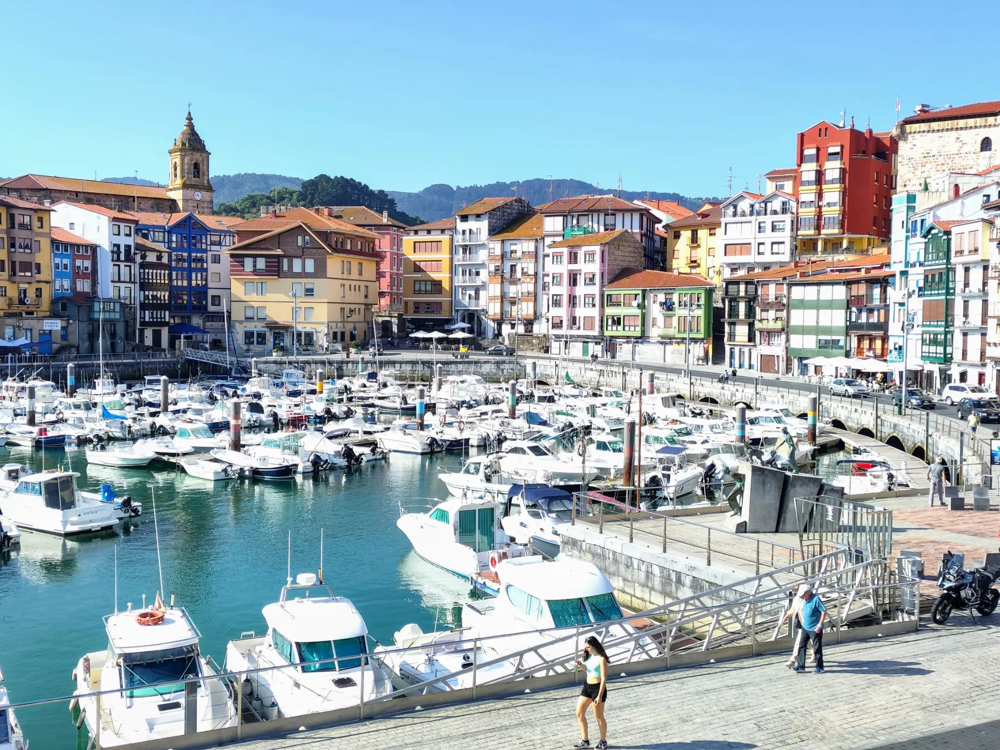
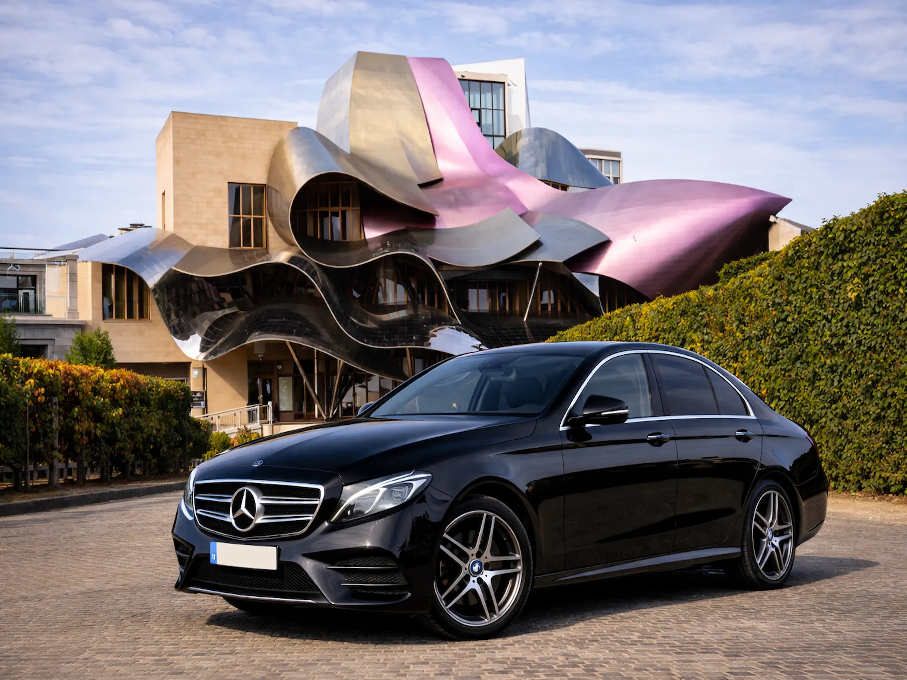
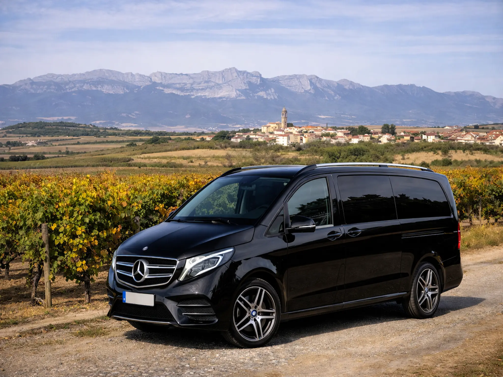
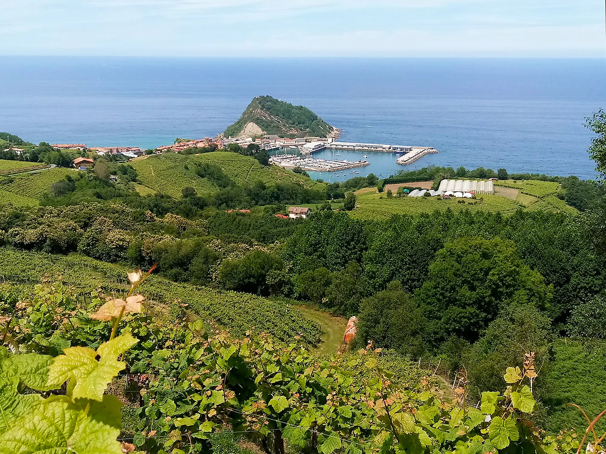
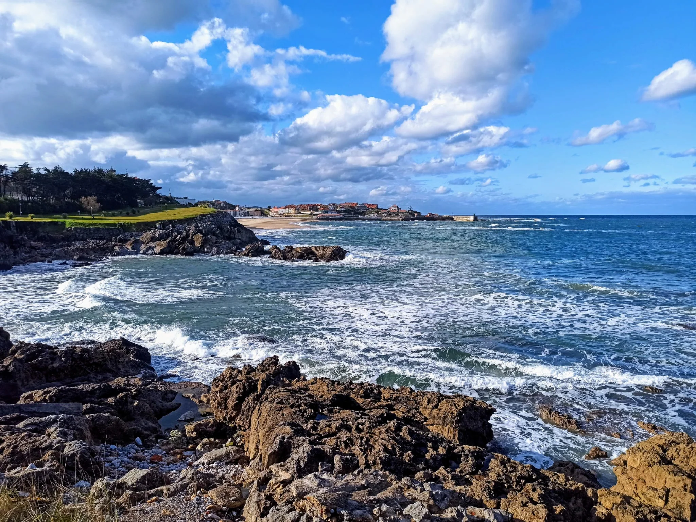

Costa y pueblos marineros
Recorridos por enclaves costeros con encanto, miradores, gastronomia y paradas en localidades emblematicas.

Experiencias privadas para descubrir el País Vasco con chofer-guía, paradas planificadas y rutas adaptadas a sus intereses.
Itinerarios pensados para conocer lugares, cultura y paisajes, con atención cercana durante toda la experiencia.
En Basque Tours & Transfers organizamos tours privados para quienes desean conocer el País Vasco como experiencia turística, no solo como desplazamiento. Nuestros choferes-guía acompañan al viajero durante rutas de aproximadamente 8 horas, con paradas, explicaciones y un ritmo adaptado a los intereses del grupo.
Combinamos conducción cómoda, conocimiento local y trato cercano para que cada visita resulte enriquecedora. Podemos proponer recorridos ya definidos o diseñar un itinerario a medida según intereses gastronómicos, paisajísticos, culturales o de ritmo de viaje.


Recorridos por enclaves costeros con encanto, miradores, gastronomia y paradas en localidades emblematicas.

Experiencias orientadas a patrimonio, arquitectura, vinedos y visitas con un ritmo mas pausado y exclusivo.

Rutas centradas en paisajes espectaculares, cultura local y trayectos adaptados a sus preferencias.

Este servicio es una opcion excelente para quienes desean conocer la region sin preocuparse por la conduccion, los horarios o la planificacion de la ruta. Resulta muy util para escapadas privadas, visitas especiales, celebraciones, viajes culturales o experiencias mas exclusivas.
Podemos trabajar con propuestas ya definidas o construir un tour a medida teniendo en cuenta intereses gastronomicos, paisajisticos, culturales o de ritmo de viaje.
Sí. Organizamos experiencias privadas adaptadas al cliente y al tamano del grupo.
Si. Podemos ajustar paradas, tiempos y enfoque del recorrido segun sus preferencias.
Habitualmente son rutas de unas 8 horas, aunque podemos valorar otras opciones segun el plan.
Solo tiene que usar el formulario y contarnos que tipo de tour le interesa, la fecha y el numero de viajeros.
Cuentenos que experiencia le gustaria realizar y prepararemos una propuesta personalizada.
Solicitar presupuesto